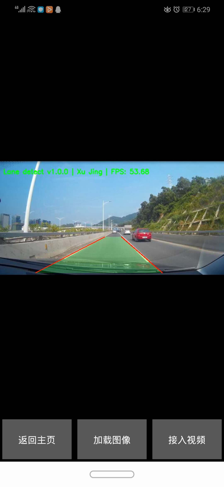

第四章智能车道线检测项目(基于Kivy)
1.车道线检测的OpenCV实现
该部分并不是本课程介绍的重点，在视频课程中会对该部分进行讲解，其代码保存在sample_lane_detection.py中
'''
xujing
2020-06-20
车道线检测 opencv
1、CCD视频摄像机校准
2、读视频，转成按每一帧读取，图像预处理
3、图像灰度化
4、高斯平滑，减少边缘干扰
5、利用canny算子，进行边缘检测
6、设定感兴趣区域，减少运算量
7、利用hough变换，进行直线检测
8、将检测成功的直线和原图像融合
'''
import cv2
import numpy as np
import time
import logging
#Canny算子或Sobel算子进行边缘检测
def canny_func(blur_gray,canny_lthreshold=150,canny_hthreshold=250):
canny_lthreshold = canny_lthreshold
canny_hthreshold = canny_hthreshold
edges = cv2.Canny(blur_gray,canny_lthreshold,canny_hthreshold)
return edges
#设置ROI区域,定义一个和输入图像同样大小的全黑图像mask
def roi_mask(img,vertics):
mask = np.zeros_like(img)
#根据输入图像的通道数，忽略的像素点是多通道的白色，还是单通道的白色
if len(img.shape) > 2:
channel_count = img.shape[2]
mask_color = (255,)*channel_count
else:
mask_color = 255
cv2.fillPoly(mask,[vertics],mask_color)
masked_img = cv2.bitwise_and(img,mask)
return masked_img
# Hough变换
# https://blog.csdn.net/yuyuntan/article/details/80141392
def hough_func(roi_image,rho=1,theta=np.pi/180,threshold=15,min_line_lenght=40,max_line_gap=20):
rho = rho
theta = theta
threshold = threshold
min_line_lenght = min_line_lenght
max_line_gap = max_line_gap
# line_img = hough_lines(roi_image,rho,theta,threshold,min_line_lenght,max_line_gap)
line_img = cv2.HoughLinesP(roi_image,rho,theta,threshold,min_line_lenght,max_line_gap)
return line_img
# def draw_lines(img,lines,color = [0,0,255],thickness = 2):
# for line in lines:
# for x1,y1,x2,y2 in line:
# cv2.line(img,(x1,y1),(x2,y2),color,thickness)
# line_image = np.copy(img) # 复制一份原图，将线段绘制在这幅图上
# draw_lines(line_image, lines, [255, 0, 0], 6)
# 计算左右车道线的直线方程
# 根据每个线段在图像坐标系下的斜率，判断线段为左车道线还是右车道线，
# 并存于不同的变量中。随后对所有左车道线上的点、所有右车道线上的点做一次最小二乘直线拟合，
# 得到的即为最终的左、右车道线的直线方程。
# 最小二乘拟合讲解可参考：https://blog.csdn.net/nienelong3319/article/details/80894621
# np.polyfit(X, Y, 1) #一次多项式拟合，相当于线性拟合
# 计算左右车道线的上下边界
# 考虑到现实世界中左右车道线一般都是平行的，所以可以认为左右车道线上最上和最下的点对应的y值，
# 就是左右车道线的边界。
def draw_lines(img, lines, color=[0, 0, 255], thickness=2):
left_lines_x = []
left_lines_y = []
right_lines_x = []
right_lines_y = []
line_y_max = 0
line_y_min = 999
try:
for line in lines:
for x1,y1,x2,y2 in line:
if y1 > line_y_max:
line_y_max = y1
if y2 > line_y_max:
line_y_max = y2
if y1 < line_y_min:
line_y_min = y1
if y2 < line_y_min:
line_y_min = y2
k = (y2 - y1)/(x2 - x1)
if k < -0.3:
left_lines_x.append(x1)
left_lines_y.append(y1)
left_lines_x.append(x2)
left_lines_y.append(y2)
elif k > 0.3:
right_lines_x.append(x1)
right_lines_y.append(y1)
right_lines_x.append(x2)
right_lines_y.append(y2)
#最小二乘直线拟合
left_line_k, left_line_b = np.polyfit(left_lines_x, left_lines_y, 1)
right_line_k, right_line_b = np.polyfit(right_lines_x, right_lines_y, 1)
#根据直线方程和最大、最小的y值反算对应的x
cv2.line(img,
(int((line_y_max - left_line_b)/left_line_k), line_y_max),
(int((line_y_min - left_line_b)/left_line_k), line_y_min),
color, thickness)
cv2.line(img,
(int((line_y_max - right_line_b)/right_line_k), line_y_max),
(int((line_y_min - right_line_b)/right_line_k), line_y_min),
color, thickness)
# plot polygon
zero_img = np.zeros((img.shape), dtype=np.uint8)
polygon = np.array([
[int((line_y_max - left_line_b)/left_line_k), line_y_max],
[int((line_y_max - right_line_b)/right_line_k), line_y_max],
[int((line_y_min - right_line_b)/right_line_k), line_y_min],
[int((line_y_min - left_line_b)/left_line_k), line_y_min]
])
# 用1填充多边形
cv2.fillConvexPoly(zero_img, polygon, color=(0, 255, 0))
# zero_mask = cv2.rectangle(zero_img, (int((line_y_max - left_line_b)/left_line_k), line_y_max),
# (int((line_y_min - right_line_b)/right_line_k), line_y_min),
# color=(0, 255, 0), thickness=-1)
alpha = 1
# beta 为第二张图片的透明度
beta = 0.2
gamma = 0
# cv2.addWeighted 将原始图片与 mask 融合
img = cv2.addWeighted(img, alpha, zero_img, beta, gamma)
except Exception as e:
# print(str(e))
# logging.info("[lane detect ] NO detection")
pass
return img
def detect_img(img):
start = time.time()
#取图灰度化
grap = cv2.cvtColor(img,cv2.COLOR_RGB2GRAY)
blur_grap = cv2.GaussianBlur(grap,(3,3),0)
canny_image = canny_func(blur_grap,canny_lthreshold=150,canny_hthreshold=250)
#图像像素行数 rows = canny_image.shape[0] 720行
#图像像素列数 cols = canny_image.shape[1] 1280列
left_bottom = [0, canny_image.shape[0]]
right_bottom = [canny_image.shape[1], canny_image.shape[0]]
left_top = [canny_image.shape[1]/3,canny_image.shape[0]/1.5]
right_top = [canny_image.shape[1]/3*2,canny_image.shape[0]/1.5]
# apex = [canny_image.shape[1]/2, 290]
# vertices = np.array([ left_bottom, right_bottom, apex ], np.int32)
vertices = np.array([ left_top,right_top, right_bottom, left_bottom], np.int32)
roi_image = roi_mask(canny_image, vertices)
# roi_image = roi_mask(img, vertices)
line_img = hough_func(roi_image,rho=1,theta=np.pi/180,threshold=15,min_line_lenght=40,max_line_gap=20)
img = draw_lines(img,line_img)
end = time.time()
detect_fps = round(1.0/(end-start+0.00001),2)
font = cv2.FONT_HERSHEY_SIMPLEX
img = cv2.putText(img, 'Lane detect v1.0.0 | Xu Jing | FPS: {}'.format(detect_fps),
(10, 40), font, 0.7, (0,255,0), 2)
return img
if __name__ == "__main__":
img = cv2.imread("./static/test.jpg")
img = detect_img(img)
cv2.imwrite("output.jpg",img)
2.项目展示及Index页面开发
首先我们创建Index页面，构建一个main.py文件，该py文件是kivy应用程序的入口函数
import kivy
from kivy.app import App
from kivy.uix.floatlayout import FloatLayout
from kivy.uix.boxlayout import BoxLayout
from kivy.uix.label import Label
from kivy.uix.button import Button
from kivy.uix.filechooser import FileChooserIconView
from kivy.properties import ObjectProperty
from kivy.uix.popup import Popup
from kivy.factory import Factory
from kivy.uix.screenmanager import Screen, ScreenManager
# from kivy.clock import Clock
from kivy.graphics.texture import Texture
from kivy.uix.camera import Camera
from kivy.properties import BooleanProperty, NumericProperty
import os
import cv2
import numpy as np
import logging
from sample_lane_detection import *
# import win32timezone
# Index page
class IndexPage(FloatLayout):
'''
欢迎页面
'''
def __init__(self,**kwargs):
super().__init__(**kwargs)
@staticmethod
def page_go(*args):
App.get_running_app().screen_manager.current="Image_page"
App.get_running_app().screen_manager.transition.direction = 'left'
class LaneDetectApp(App):
def build(self):
self.icon = "./static/icon.ico"
self.title = "智能车道线检测App"
self.load_kv("./index.kv") # 需要创建一个index.kv
self.screen_manager = ScreenManager()
pages = {"Index_page":IndexPage()}
for item,page in pages.items():
self.default_page = page
# 添加页面
screen = Screen(name=item)
screen.add_widget(self.default_page)
# 向屏幕管理器添加页面
self.screen_manager.add_widget(screen)
return self.screen_manager
if __name__ == "__main__":
LaneDetectApp().run()
我们将UI控件通过kvlang实现，创建index.kv文件
# xujing
# index page
#: import C kivy.utils.get_color_from_hex
<IndexPage>:
canvas.before:
Color:
rgba: [1,1,1,1]
Rectangle:
pos: self.pos
size: self.size
source: './static/index.jpg'
Label:
id: 'title_label'
text: '[ref="click"][b]\u6b22\u8fce\u4f7f\u7528\u8f66\u9053\u7ebf\u68c0\u6d4b\u0041\u0070\u0070[/b][/ref]'
color: C('#FFFF00')
font_name: './static/DroidSansFallback.ttf'
font_size: 72 # 24
pos_hint: {"center_x":0.5,"y":0.2}
markup: True
on_ref_press: root.page_go()
Label:
text: '[b]v1.0.0[/b]'
color: C('#FFFF00')
font_name: './static/DroidSansFallback.ttf'
font_size: 54 #18
pos_hint: {"center_x":0.5,"y":0.1}
markup: True
Label:
text: '[b]\u5f00\u53d1\u8005\uff1a\u0020\u5f90\u9759[/b]'
color: C('#FFFF00')
font_name: './static/DroidSansFallback.ttf'
font_size: 54 #18
pos_hint: {"center_x":0.5,"y":0.05}
markup: True
3.图像车道线检测页面开发
继续完善车道线检测中基于图像的车道线检测页面的开发，在原有的index页面的基础上增加页面
'''
xujing
2020-06-26
车道线加测的跨平台GUI实现(基于kivy)
支持Windows, Linux, MacOS, ios, Andriod打包
'''
import kivy
from kivy.app import App
from kivy.uix.floatlayout import FloatLayout
from kivy.uix.boxlayout import BoxLayout
from kivy.uix.label import Label
from kivy.uix.button import Button
from kivy.uix.filechooser import FileChooserIconView
from kivy.properties import ObjectProperty
from kivy.uix.popup import Popup
from kivy.factory import Factory
from kivy.uix.screenmanager import Screen, ScreenManager
# from kivy.clock import Clock
from kivy.graphics.texture import Texture
from kivy.uix.camera import Camera
from kivy.properties import BooleanProperty, NumericProperty
import os
import cv2
import numpy as np
import logging
from sample_lane_detection import *
# import win32timezone
def cv_imread(filePath):
'''
opencv读取带中文路径的图片
'''
with open(filePath,mode="rb") as f:
img_buff = np.frombuffer(f.read(),dtype=np.uint8)
cv_img = cv2.imdecode(img_buff,-1)
#cv_img = cv2.imdecode(np.fromfile(filePath,dtype=np.uint8),-1) # Android error: stderr: OSError: could not seek in file
return cv_img
# Index page
class IndexPage(FloatLayout):
'''
欢迎页面
'''
def __init__(self,**kwargs):
super().__init__(**kwargs)
@staticmethod
def page_go(*args):
App.get_running_app().screen_manager.current="Image_page"
App.get_running_app().screen_manager.transition.direction = 'left'
# Image page
class LoadDialog(FloatLayout):
'''
弹窗的加载和取消属性定义
'''
load = ObjectProperty(None)
cancel = ObjectProperty(None)
cwdir = ObjectProperty(None)
Factory.register("LoadDialog",cls=LoadDialog)
class ImagePage(BoxLayout):
'''
单帧图像的车道线监测
'''
def __init__(self,**kwargs):
super().__init__(**kwargs)
@staticmethod
def back_index(*args):
App.get_running_app().screen_manager.current="Index_page"
App.get_running_app().screen_manager.transition.direction = 'right'
def back_video(self,*args):
App.get_running_app().screen_manager.current="Video_page"
App.get_running_app().screen_manager.transition.direction = 'left'
def dismiss_popup(self):
'''
关闭弹窗
'''
self._popup.dismiss()
def show_load(self):
# 绑定加载和取消的方法
content = LoadDialog(load=self._load,cancel=self.dismiss_popup,cwdir=os.getcwd())
# content = LoadDialog(load=self._load,cancel=self.dismiss_popup,cwdir="/storage/emulated/0/kivy")
self._popup = Popup(title="Load Image",content=content,size_hint=(.9,.9))
# open
self._popup.open()
def _load(self,path,filename):
print(path,filename)
self.dismiss_popup()
logging.info("path:{},filename:{}".format(path,filename))
# img = cv2.imread(filename)
img= cv_imread(filename)
img = detect_img(img)
img = cv2.cvtColor(img, cv2.COLOR_BGR2RGBA)
img = cv2.flip(img, 0) # 旋转
img_buff = img.tostring()
img_texture = Texture.create(size=(img.shape[1], img.shape[0]), colorfmt='rgba')
img_texture.blit_buffer(img_buff, colorfmt='rgba', bufferfmt='ubyte')
self.ids.img_det.texture = img_texture
class LaneDetectApp(App):
def build(self):
self.icon = "./static/icon.ico"
self.title = "智能车道线检测App"
self.load_kv("./index.kv")
self.load_kv("./image.kv")
self.screen_manager = ScreenManager()
pages = {"Index_page":IndexPage(),"Image_page":ImagePage(),}
for item,page in pages.items():
self.default_page = page
# 添加页面
screen = Screen(name=item)
screen.add_widget(self.default_page)
# 向屏幕管理器添加页面
self.screen_manager.add_widget(screen)
return self.screen_manager
if __name__ == "__main__":
LaneDetectApp().run()
增加image.kv
<ImagePage>:
orientation: 'vertical'
Image:
id: img_det
source: "./static/example.jpg"
size_hint: (1.0,.9)
size_height_y: None
width: 100
allow_stretch: True
BoxLayout:
orientation: 'horizontal'
size_hint: (1,.1)
spacing: 25
padding: 10
Button:
text: "[b]\u8fd4\u56de\u4e3b\u9875[/b]"
font_name: './static/DroidSansFallback.ttf'
markup: True
on_press:root.back_index()
Button:
text: "[b]\u52a0\u8f7d\u56fe\u50cf[/b]"
font_name: './static/DroidSansFallback.ttf'
markup: True
on_release: root.show_load()
Button:
text: "[b]\u63a5\u5165\u89c6\u9891[/b]"
font_name: './static/DroidSansFallback.ttf'
markup: True
on_press:root.back_video()
<LoadDialog>:
BoxLayout:
size: root.size
pos: root.pos
orientation: "vertical"
FileChooserIconView:
id: filechooser
rootpath: root.cwdir
filters: ['*.jpg',"*.png","*.bmp","*.jpeg"]
on_selection: text_input.text = self.selection and self.selection[0] or ''
TextInput:
id: text_input
size_hint_y: .1
multiline: False
BoxLayout:
size_hint_y: .1
spacing: 30
Button:
text: "[b]\u52a0\u8f7d[/b]"
on_release: root.load(filechooser.path,text_input.text)
markup: True
font_name: './static/DroidSansFallback.ttf'
Button:
text: "[b]\u53d6\u6d88[/b]"
on_release: root.cancel()
markup: True
font_name: './static/DroidSansFallback.ttf'

4.手机摄像头视频流车道检测开发
继续增加对于手机摄像头的支持
'''
xujing
2020-06-26
车道线加测的跨平台GUI实现(基于kivy)
支持Windows, Linux, MacOS, ios, Andriod打包
'''
import kivy
from kivy.app import App
from kivy.uix.floatlayout import FloatLayout
from kivy.uix.boxlayout import BoxLayout
from kivy.uix.label import Label
from kivy.uix.button import Button
from kivy.uix.filechooser import FileChooserIconView
from kivy.properties import ObjectProperty
from kivy.uix.popup import Popup
from kivy.factory import Factory
from kivy.uix.screenmanager import Screen, ScreenManager
# from kivy.clock import Clock
from kivy.graphics.texture import Texture
from kivy.uix.camera import Camera
from kivy.properties import BooleanProperty, NumericProperty
import os
import cv2
import numpy as np
import logging
from sample_lane_detection import *
# import win32timezone
def cv_imread(filePath):
'''
opencv读取带中文路径的图片
'''
with open(filePath,mode="rb") as f:
img_buff = np.frombuffer(f.read(),dtype=np.uint8)
cv_img = cv2.imdecode(img_buff,-1)
#cv_img = cv2.imdecode(np.fromfile(filePath,dtype=np.uint8),-1) # Android error: stderr: OSError: could not seek in file
return cv_img
# Index page
class IndexPage(FloatLayout):
'''
欢迎页面
'''
def __init__(self,**kwargs):
super().__init__(**kwargs)
@staticmethod
def page_go(*args):
App.get_running_app().screen_manager.current="Image_page"
App.get_running_app().screen_manager.transition.direction = 'left'
# Image page
class LoadDialog(FloatLayout):
'''
弹窗的加载和取消属性定义
'''
load = ObjectProperty(None)
cancel = ObjectProperty(None)
cwdir = ObjectProperty(None)
Factory.register("LoadDialog",cls=LoadDialog)
class ImagePage(BoxLayout):
'''
单帧图像的车道线监测
'''
def __init__(self,**kwargs):
super().__init__(**kwargs)
@staticmethod
def back_index(*args):
App.get_running_app().screen_manager.current="Index_page"
App.get_running_app().screen_manager.transition.direction = 'right'
def back_video(self,*args):
App.get_running_app().screen_manager.current="Video_page"
App.get_running_app().screen_manager.transition.direction = 'left'
def dismiss_popup(self):
'''
关闭弹窗
'''
self._popup.dismiss()
def show_load(self):
# 绑定加载和取消的方法
#content = LoadDialog(load=self._load,cancel=self.dismiss_popup,cwdir=os.getcwd())
content = LoadDialog(load=self._load,cancel=self.dismiss_popup,cwdir="/storage/emulated/0/kivy")
self._popup = Popup(title="Load Image",content=content,size_hint=(.9,.9))
# open
self._popup.open()
def _load(self,path,filename):
print(path,filename)
self.dismiss_popup()
logging.info("path:{},filename:{}".format(path,filename))
# img = cv2.imread(filename)
img= cv_imread(filename)
img = detect_img(img)
img = cv2.cvtColor(img, cv2.COLOR_BGR2RGBA)
img = cv2.flip(img, 0) # 旋转
img_buff = img.tostring()
img_texture = Texture.create(size=(img.shape[1], img.shape[0]), colorfmt='rgba')
img_texture.blit_buffer(img_buff, colorfmt='rgba', bufferfmt='ubyte')
self.ids.img_det.texture = img_texture
# video page
class CameraWidget(Camera):
'''
多路视频的车道线监测
'''
detectFaces = BooleanProperty(False)
angle = NumericProperty(0)
def __init__(self, **kwargs):
super().__init__(**kwargs)
self.isAndroid = kivy.platform == "android"
#if self.isAndroid:
# self.angle = -90
def on_tex(self, *l):
image = np.frombuffer(self.texture.pixels, dtype='uint8')
image = image.reshape(self.texture.height, self.texture.width, -1)
#logging.info("height:{},width:{}".format(self.texture.height,self.texture.width))
image = cv2.cvtColor(image, cv2.COLOR_RGB2BGR)
#if self.angle == 90:
# image = cv2.rotate(image, cv2.ROTATE_90_COUNTERCLOCKWISE)
#if self.angle == -90:
#image = cv2.rotate(image, cv2.ROTATE_90_CLOCKWISE)
image = cv2.rotate(image, cv2.ROTATE_90_CLOCKWISE)
# 车道线检测开始
image = detect_img(image)
image = cv2.resize(image,(640,480))
image = cv2.flip(image, 0) # 旋转
image = cv2.cvtColor(image, cv2.COLOR_BGR2RGBA)
numpy_data = image.tostring()
#self.texture = Texture.create(size=(image.shape[1], image.shape[0]), colorfmt='rgba', bufferfmt='ubyte')
self.texture.blit_buffer(numpy_data, bufferfmt="ubyte", colorfmt='rgba')
super().on_tex(self.texture)
class VideoPage(BoxLayout):
def __init__(self,**kwargs):
super().__init__(**kwargs)
@staticmethod
def back_image(*args):
App.get_running_app().screen_manager.current="Image_page"
App.get_running_app().screen_manager.transition.direction = 'right'
@staticmethod
def back_index_1(*args):
App.get_running_app().screen_manager.current="Index_page"
App.get_running_app().screen_manager.transition.direction = 'left'
class LaneDetectApp(App):
def build(self):
self.icon = "./static/icon.ico"
self.title = "智能车道线检测App"
self.load_kv("./index.kv")
self.load_kv("./image.kv")
self.load_kv("./video.kv")
self.screen_manager = ScreenManager()
pages = {"Index_page":IndexPage(),"Image_page":ImagePage(),"Video_page":VideoPage()}
for item,page in pages.items():
self.default_page = page
# 添加页面
screen = Screen(name=item)
screen.add_widget(self.default_page)
# 向屏幕管理器添加页面
self.screen_manager.add_widget(screen)
return self.screen_manager
if __name__ == "__main__":
LaneDetectApp().run()
增加video.kv
<CameraWidget>
resolution: (640,480)
play: True
keep_ratio: True
allow_stretch: True
canvas.before:
PushMatrix
Rotate:
angle: root.angle
axis: 0, 0, 1
origin: root.center
canvas.after:
PopMatrix
orientation: 'vertical'
<VideoPage>:
orientation: 'vertical'
CameraWidget:
id: camera
BoxLayout:
orientation: 'horizontal'
size_hint: (1,.1)
spacing: 25
padding: 10
Button:
text: "[b]\u52a0\u8f7d\u56fe\u50cf"
font_name: './static/DroidSansFallback.ttf'
markup: True
on_press:root.back_image()
Button:
text: "[b]\u8fd4\u56de\u4e3b\u9875[/b]"
font_name: './static/DroidSansFallback.ttf'
markup: True
on_release: root.back_index_1()
5.项目总结
关于该项目在windows平台下的打包，可以参考本课程的第6章和第7章，我们将使用pyinstaller和setupfactory对kivy应用程序进行PC端的应用程序打包。 本次课仅展示打包后的一些效果。
windows下的应用：
关于该项目的Android打包，可以参考本课程的第9章，本次课仅展示在安卓上的打包运行效果。
android下的应用
